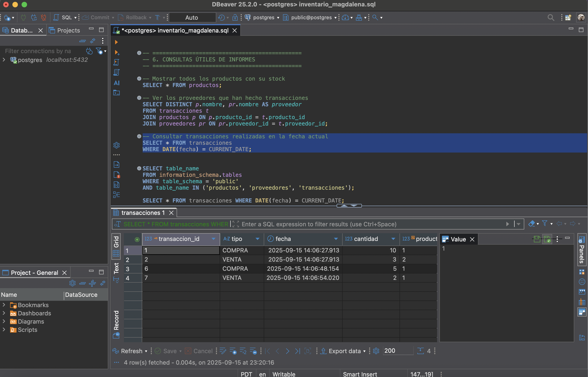
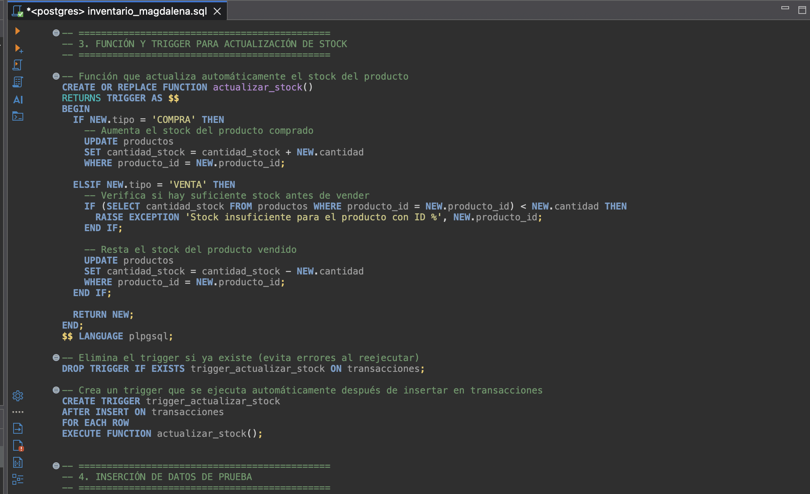
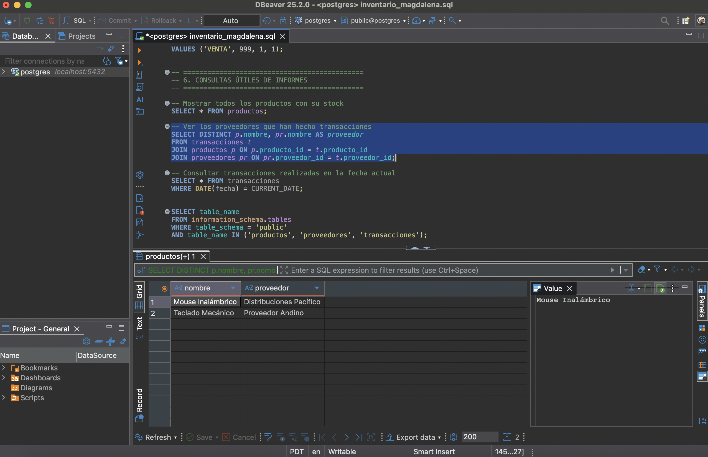

Sistema de Inventario con Base de Datos Relacional
Proyecto desarrollado en PostgreSQL aplicando buenas prácticas de modelado, normalización y transacciones SQL.
Objetivo del Proyecto
Este proyecto consistió en diseñar e implementar un sistema de inventario basado en una base de datos relacional utilizando PostgreSQL. El sistema permite registrar productos, proveedores y transacciones aplicando buenas prácticas como:
- Uso de claves primarias y foráneas para relaciones sólidas.
- Normalización hasta la Tercera Forma Normal (3FN).
- Aplicación de transacciones SQL para mantener la integridad.
- Implementación de consultas complejas y triggers.
Estructura de Tablas

- productos: nombre, descripción, precio y cantidad.
- proveedores: datos de contacto de los proveedores.
- transacciones: compras/ventas con fecha y producto.
Se utilizaron claves primarias y foráneas, además de restricciones como CHECK, DEFAULT CURRENT_TIMESTAMP, NOT NULL y UNIQUE.
Registro de Transacciones
- Las compras aumentan el stock.
- Las ventas disminuyen el stock.
Mediante triggers y funciones SQL se actualiza automáticamente la cantidad de inventario por transacción.
Triggers y Automatización
Se creó la función actualizar_stock() y un trigger que ajusta el stock en cada inserción de transacción, validando stock suficiente en ventas.
Consultas SQL
Consultas con SELECT + JOIN, filtros con WHERE, GROUP BY y funciones agregadas para reportes útiles del inventario.
Normalización
Se aplicó normalización hasta 3FN para evitar duplicación y asegurar integridad.
- Separación de entidades: productos, proveedores y transacciones.
- Eliminación de datos redundantes.
- Relaciones con claves foráneas sin duplicación de información.
SELECT p.nombre AS producto, pr.nombre AS proveedor
FROM productos p
JOIN proveedores pr ON p.proveedor_id = pr.proveedor_id;Gracias a la normalización, es posible actualizar proveedores o productos en un solo lugar, sin inconsistencias.
Conclusión Personal
Este proyecto me permitió aplicar en un contexto real diseño e implementación de bases de datos relacionales. Desde el modelado hasta las automatizaciones con SQL, reforcé el uso de PostgreSQL, DBeaver y el diseño de ERD, destacando la importancia de una estructura sólida para el manejo eficiente de datos.